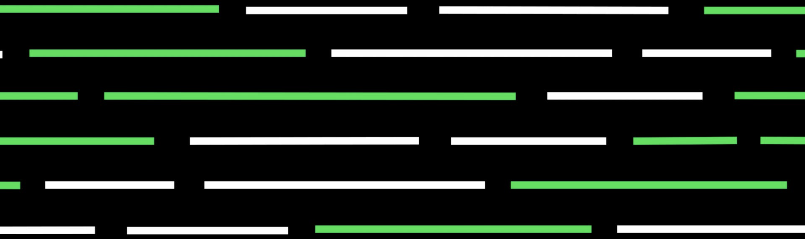

Generative AI
Cos’è la Generative AI: GPT, ChatGPT e DALL-E
La generative AI, o intelligenza artificiale generativa, si riferisce a un campo dell'intelligenza artificiale che si concentra sulla creazione di contenuti originali, come immagini, musica, testo o anche video, da parte di un sistema autonomo.In parole semplici, la generative AI è come insegnare a un computer a essere creativo .

Generative AI
La generative AI funziona analizzando un grande insieme di dati di input, come immagini o testi esistenti, per imparare i modelli e le caratteristiche presenti in quei dati. Una volta che il modello di generative AI ha imparato da questi dati, può utilizzare tale conoscenza per generare nuovi contenuti in base ai modelli e alle regole appresi.
GPT Models
I modelli GPT (Generative Pre-trained Transformer) sono una serie di modelli di intelligenza artificiale sviluppati da OpenAI. Il funzionamento di GPT si basa sull'architettura del trasformatore, un tipo di rete neurale che sfrutta l'attenzione per catturare le relazioni tra le parole in un testo.
ChatGPT
ChatGPT è un modello di intelligenza artificiale basato sull'architettura GPT-3.5 e viene utilizzato per la generazione di testo conversazionale. Si è dimostrato particolarmente efficace nel trattare il linguaggio naturale.
L'obiettivo di ChatGPT è di rispondere in modo coerente e rilevante alle domande degli utenti. Tuttavia, è importante notare che non ha la capacità di comprendere il mondo o di avere esperienze reali.Le sue risposte sono basate sulle informazioni presenti nel suo addestramento e possono quindi essere limitate o obsolete.

DALL-E
Generative AI per le immagini. Consente di generare o modificare immagini da descrizioni testuali. Modelli famosi sono DALL-E e Stable Diffusion.
Questo prompt ha generato l'immagine a fianco:an astronaut lounging in a tropical resort in space in a vaporwave style.